1020D14 front crank shaft oil seal cover - r + r and replace seals for versions with oil pump on crank shaft, timing side
- Path
- Procedures > 10 ENGINE > 1020 CRANKCASE SUMP AND COVERS > 1020D oil seals on crank shaft > 1020D14 front crank shaft oil seal cover - r + r and replace seals for versions with oil pump on crank shaft, timing side
- Kind
- repair procedure (removal / refitting; the operation number is the code)
- Applies to
- engines: 1.9 JTD 8v , 1.9 JTD 16v, 2.4 JTD 10v; all production periods
- Interactive page
- https://sloeber94.github.io/elrnDB-a156/en/#/3237760
Applies to: engines: 1.9 JTD 8v ; all production periods
1020D16 front crankshaft oil seal cover - r+r and replace gaskets for versions with airconditioner
Applies to: engines: 2.4 JTD 10v; all production periods
 Removing
Removing
 Refitting
Refitting4450B10 Front WHEEL (one) - R.R.
7055B64 Engine compartment DUST shield in front wheel arch (one), left or right - R.R.
1092G10 single engine belt r r
1092A12 crankshaft pulley - r+r for versions with air conditioner
1032D12 timing system protective cover(s) - r + r
1008C10 power unit upper reaction link r r .
1016A10 sound-proofing cover - r + r .
1008C14 engine link bracket - r r
1032B44 toothed drive pulley - r + r with timing belt removed
1032B47 toothed drive pulley - r r for versions with air conditioner
1076B50 exhaust pipe attachment to engine - r + r
1084A16 oil dip stick pipe - r r
1020A20 crank case oil sump - r + r clean seals for sealant application
1. Remove the coolant return hose from the radiator to the pump.
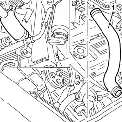
Applies to: engines: 2.4 JTD 10v; all production periods
1. Undo the lower bolts for the air conditioning compressor.
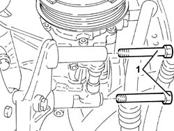
Applies to: engines: 2.4 JTD 10v; all production periods
Lower the vehicle.
1. Disconnect the electrical connection for the air conditioning compressor.
2. Undo the upper bolts (2a) and move the air conditioning compressor (2b) away from the mounting.
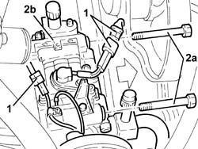
Applies to: engines: 2.4 JTD 10v; all production periods
1. Undo the bolts (1a) and remove the air conditioning compressor mounting (1b).
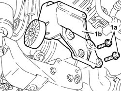
Applies to: engines: 2.4 JTD 10v; all production periods
1. Remove the engine oil filter using a suitable tool.
2. Undo the connector securing the engine oil heat exchanger to the crankshaft oil seal front cover.
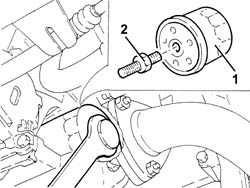
Applies to: engines: 2.4 JTD 10v; all production periods
1. Using the tool (1a), rotate the auxiliary shaft automatic belt tensioner until the tool (1b) comes out.
 | Name | Country |
|---|---|---|
1a | Key | 1.860.966.000 |
| Name | Country |
|---|---|---|
1b | Clip | 1.870.645.000 |
2. Undo the bolts (2a) and remove the automatic belt tensioner (2b) for the auxiliary drive belt.
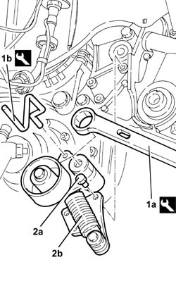
Applies to: engines: 2.4 JTD 10v; all production periods
1. Undo the bolts (1a) and remove the crankshaft front cover (1b) with the gasket (1c).
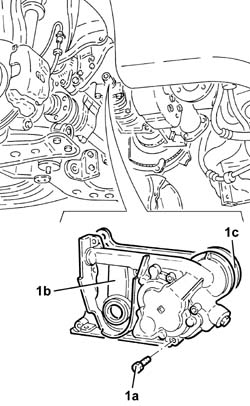
Applies to: engines: 2.4 JTD 10v; all production periods
Refitting
Removing1. Operate the oil pump using the tool (1a) and check that the timing references (1b) are aligned.
| Name | Country |
|---|---|---|
1a | Counter-torque/Template | 1.870.799.000 |
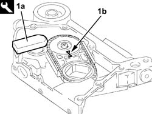
Applies to: engines: 2.4 JTD 10v; all production periods
1. Fit the crankshaft front cover (1a), complete with gasket (1b), and fix it tightening the bolts (1c) to the recommended torque.
 | Fastening | Component | Ø | Value (daNm) |
|---|---|---|---|---|
1c | Bolt | CRANKSHAFT FRONT COVER | M6 | 0.8 - 1.0 |
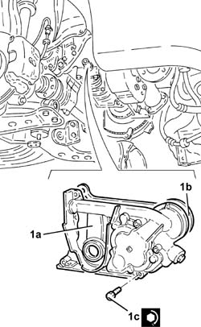
Applies to: engines: 2.4 JTD 10v; all production periods
1. Fit the automatic belt tensioner (1a) for the auxiliary drive belt and fix it tightening the bolts (1b) to the recommended torque.
| Fastening | Component | Ø | Value (daNm) |
|---|---|---|---|---|
1b | Bolt | SINGLE SERVICES MOBILE BELT TENSIONER | M8 | 2.1 - 2.6 |
| Fastening | Component | Ø | Value (daNm) |
|---|---|---|---|---|
- | Bolt | SINGLE SERVICES MOBILE BELT TENSIONER | M10 | 6.0 - 7.4 |
2. Using the tool (2a), rotate the auxiliary shaft automatic belt tensioner until the tool (2b) is fitted.
| Name | Country |
|---|---|---|
2a | Key | 1.860.966.000 |
| Name | Country |
|---|---|---|
2b | Clip | 1.870.645.000 |
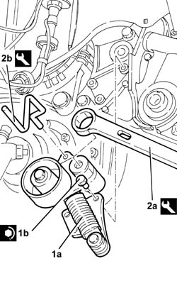
Applies to: engines: 2.4 JTD 10v; all production periods
Tighten the connector securing the engine oil heat exchanger to the recommended torque.
| Fastening | Component | Ø | Value (daNm) |
|---|---|---|---|---|
- | Connector | ENGINE OIL HEAT EXCHANGER | - | 3.0 |
Place the engine oil filter back in its housing and tighten it fully, by hand, after having lubricted the gasket with engine oil.
1. Fit the air conditioning compressor mounting (1a) and fix it tightening the bolts (1b) to the recommended torque.
| Fastening | Component | Ø | Value (daNm) |
|---|---|---|---|---|
1b | Bolt | AIR CONDITIONING COMPRESSOR SUPPORT | M10 | 4.2 - 5.2 |
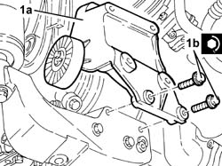
Applies to: engines: 2.4 JTD 10v; all production periods
Lower the vehicle.
1. Place the air conditioning compressor (1a) back in its housing and fix it to the mounting tightening the two upper bolts (1b) to the recommended torque.
| Fastening | Component | Ø | Value (daNm) |
|---|---|---|---|---|
1b | Bolt | AIR CONDITIONER ASSEMBLY COMPRESSOR | M8 | 2.1 - 2.6 |
2. Connect the electrical connection for the air conditioning compressor.
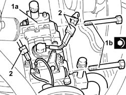
Applies to: engines: 2.4 JTD 10v; all production periods
Raise the vehicle.
1. Tighten the air conditioning compressor lower bolts to the recommended torque.
| Fastening | Component | Ø | Value (daNm) |
|---|---|---|---|---|
1 | Bolt | AIR CONDITIONER ASSEMBLY COMPRESSOR | M8 | 2.1 - 2.6 |
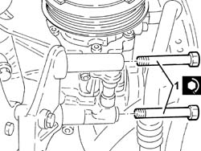
Applies to: engines: 2.4 JTD 10v; all production periods
Fit the coolant return hose from the radiator to the pump.
Supply the engine cooling system with the recommended fluid.
 | Type | Component | Name | Qty. |
|---|---|---|---|---|
- | Fluid [l] | ENGINE COOLING CIRCUIT | Alfa Romeo Climafluid Super Permanent -40°C | 6.8 |
1020A20 crank case oil sump - r + r clean seals for sealant application
1084A16 oil dip stick pipe - r r
1076B50 exhaust pipe attachment to engine - r + r
1032B47 toothed drive pulley - r r for versions with air conditioner
1032B44 toothed drive pulley - r + r with timing belt removed
1008C14 engine link bracket - r r
1016A10 sound-proofing cover - r + r .
1008C10 power unit upper reaction link r r .
1032D12 timing system protective cover(s) - r + r
1092A12 crankshaft pulley - r+r for versions with air conditioner
1092G10 single engine belt r r
7055B64 Engine compartment DUST shield in front wheel arch (one), left or right - R.R.
Applies to: engines: 1.9 JTD 16v; all production periods
Removing
RefittingPosition the vehicle on the ramp.
Proceed with removal 1016A10 sound-proofing cover - r + r .
Ensure that the ignition key is in the OFF position, then disconnect the negative battery terminal (-).
 | Name | Connector |
|---|---|---|
- | Battery |
Proceed with removal 1008C10 power unit upper reaction link r r .
Proceed with removal 1060G80 ds electric injection control unit - r r .
Proceed with removal 4450B04 right front wheel r r .
Proceed with removal 7055B54 under-engine guard - r r .
Proceed with removal - 7055B91 Right front WHEEL ARCH LINER - R.R. .
Proceed with removal 1092G10 single engine belt r r .
Proceed with removal 1092A10 Crankshaft services PULLEY - R.R. .
Proceed with removal 1092G20 engine component single belt fixed tensioner - one - r + r .
Proceed with removal 1032D12 timing system protective cover(s) - r + r .
Proceed with removal 1032B10 toothed timing belt - r + r for timing adjustment or replacement .
Proceed with removal 1032B44 toothed drive pulley - r + r with timing belt removed .
Proceed with removal 1084A16 oil dip stick pipe - r r .
Proceed with removal 1020A20 crank case oil sump - r + r clean seals for sealant application .
1. Undo the bolt (1a) and remove the fixed timing belt tensioner (1b).
2. Undo the bolts (2a) and move the engine cooling reservoir (2b) sideways.
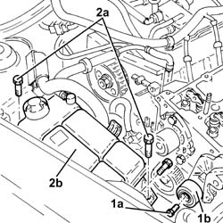
Applies to: engines: 1.9 JTD 16v; all production periods
1. Fit a suitable engine mounting bracket (1a) using the bolt (1b) fixing the pressure pump support to the camshaft housing.
2. Fit the tool (2a), complete with mountings (2b) and support the power unit attaching the rod (2c) for the tool to the bracket fitted previously.
| Name | Country |
|---|---|---|
2a | Crossmember | 1.820.581.000 |
| Name | Country |
|---|---|---|
2b | Support mountings | 1.870.650.000 |
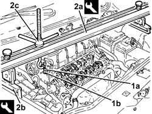
Applies to: engines: 1.9 JTD 16v; all production periods
1. Undo the bolt (1a) and remove the single drive belt tensioner (1b).
2. Undo the bolts (2a) and remove the power assisted steering pump drive pulley (2b).
3. Undo the bolts (3a) and move the power assisted steering pump (3b) backwards in relation to the support.
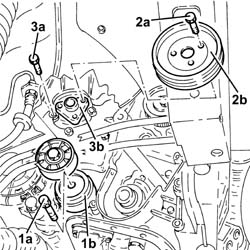
Applies to: engines: 1.9 JTD 16v; all production periods
1. Undo the bolt (1a) and disconnect the cooling radiator engine oil supply pipe (1b), engine oil filter mounting side.
2. Undo the bolt (2a) and disconnect the cooling radiator engine oil return pipe (2b), engine oil filter mounting side.
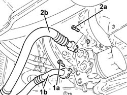
Applies to: engines: 1.9 JTD 16v; all production periods
1. Using a suitable tool, undo and remove the engine oil filter cartridge.
2. Undo the connector (2a) and remove the engine oil filter mounting (2b) with thermostatic valve incorporated.
Remove the gasket.
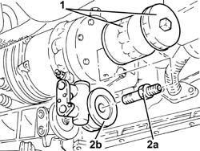
Applies to: engines: 1.9 JTD 16v; all production periods
Position a hydraulic jack under the engine.
1. Undo the bolt securing timing side rigid engine support to the flexible mounting.
2. Undo the bolts (2a) and remove the timing side rigid engine support (2b).
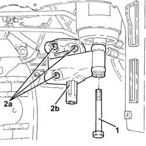
Applies to: engines: 1.9 JTD 16v; all production periods
1. Unscrew the bolts (1a) and remove the support (1b) complete with mobile timing belt tensioner (1c).
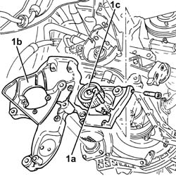
Applies to: engines: 1.9 JTD 16v; all production periods
1. Undo the bolts (1a) and remove the crankshaft front cover (1b) complete with oil seal (1c) and intake (1d).
Keep the gasket.
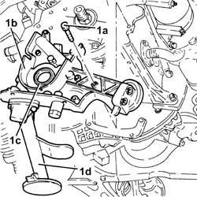
Applies to: engines: 1.9 JTD 16v; all production periods
Refitting
RemovingPlace the gasket back in its housing.
1. Place the crankshaft front cover (1a) complete with oil seal (1b) and intake (1c) back in its housing and secure it tightening the bolts (1d) to the recommended torque.
| Fastening | Component | Ø | Value (daNm) |
|---|---|---|---|---|
1d | Bolt | CRANKSHAFT FRONT COVER | M6 | (Engine crankcase side) 0.8 - 1.0 |
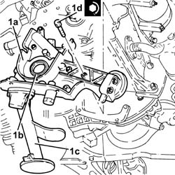
Applies to: engines: 1.9 JTD 16v; all production periods
1. Place the support (1a), complete with timing moving tensioner (1b), back in its housing and secure it using the bolts (1c).
| Fastening | Component | Ø | Value (daNm) |
|---|---|---|---|---|
1c | Bolt | POWER STEERING PUMP SUPPORT/BRACKET | M8 | (Engine crankcase side) 2.3 ÷ 2.8 |
| Fastening | Component | Ø | Value (daNm) |
|---|---|---|---|---|
1c | Bolt | POWER STEERING PUMP SUPPORT/BRACKET | M10 | (Crankcase side) 4.5 ÷ 5.5 |
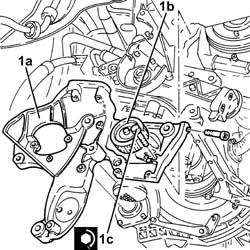
Applies to: engines: 1.9 JTD 16v; all production periods
1. Refit the timing side rigid engine support and secure it tightening the bolts (1b) to the recommended torque.
| Fastening | Component | Ø | Value (daNm) |
|---|---|---|---|---|
1b | Bolt | ENGINE MOUNT TIMING SIDE | M10 | (Crankcase side) 4.5 ÷ 5.5 |
2. Tighten the bolt securing timing side rigid engine support to the flexible mounting to the recommended torque.
| Fastening | Component | Ø | Value (daNm) |
|---|---|---|---|---|
2 | Bolt | ENGINE MOUNT TIMING SIDE | M12 | Flexible mounting side 79 97 |
Remove the hydraulic jack from under the engine.
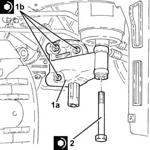
Applies to: engines: 1.9 JTD 16v; all production periods
1. Place the engine oil filter (1a) complete with gasket back in its housing and fasten it tightening the connector (1b) to the recommended torque.
| Fastening | Component | Ø | Value (daNm) |
|---|---|---|---|---|
1b | - | - | - | - |
2. Lubricate the gasket with engine oil and fit the engine oil filter, tightening fully by hand.
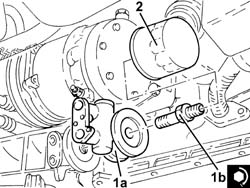
Applies to: engines: 1.9 JTD 16v; all production periods
Connect the engine oil return pipe from the cooling radiator, engine oil filter mounting side, and tighten the bolt.
Connect the engine oil supply pipe to the cooling radiator, engine oil filter mounting side, and tighten the bolt.
1. Refit the power steering pump (1a) in its seating and tighten its bolts (1b) to the specified torque.
| Fastening | Component | Ø | Value (daNm) |
|---|---|---|---|---|
1b | Bolt | POWER STEERING PUMP | M8 | (Support side) 2.3 ÷ 2.8 |
2. Place the power assisted steering pump drive pulley (2a) back in its housing and secure it by tightening the bolts (2b) to the recommended torque.
| Fastening | Component | Ø | Value (daNm) |
|---|---|---|---|---|
2b | Bolt | POWER STEERING PUMP DRIVE PULLEY | M8 | (Power assisted steering pump side 23 28 |
3. Place the engine components single drive belt moving tensioner (3a) back in its housing and fix it tightening the bolt (3b) to the recommended torque.
| Fastening | Component | Ø | Value (daNm) |
|---|---|---|---|---|
3b | Bolt | SINGLE SERVICES MOBILE BELT TENSIONER | M8 | 2.3 ÷ 2.8 |
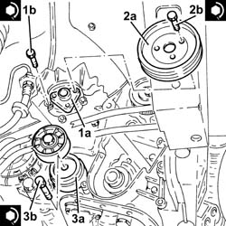
Applies to: engines: 1.9 JTD 16v; all production periods
Remove the safety tools used for supporting the power unit.
| Name | Country |
|---|---|---|
- | Crossmember | 1.820.851.000 |
| Name | Country |
|---|---|---|
- | Support mountings | 1.870.650.000 |
Refit the coolant reservoir in its seating and secure with its bolts.
Fit the fixed timing belt tensioner and secure by tightening the bolt to the recommended torque.
| Fastening | Component | Ø | Value (daNm) |
|---|---|---|---|---|
- | Bolt | FIXED TENSIONER | M10 | 4.5 ÷ 5.5 |
Proceed with refitting 1020A20 crank case oil sump - r + r clean seals for sealant application .
Proceed with refitting 1084A16 oil dip stick pipe - r r .
Proceed with refitting 1032B44 toothed drive pulley - r + r with timing belt removed .
Proceed with refitting 1032B10 toothed timing belt - r + r for timing adjustment or replacement .
Proceed with refitting 1032D12 timing system protective cover(s) - r + r .
Proceed with refitting 1092G20 engine component single belt fixed tensioner - one - r + r .
Proceed with refitting 1092A10 Crankshaft services PULLEY - R.R. .
Proceed with refitting 1092G10 single engine belt r r .
Proceed with refitting - 7055B91 Right front WHEEL ARCH LINER - R.R. .
Proceed with refitting 7055B54 under-engine guard - r r .
Proceed with refitting 4450B04 right front wheel r r .
Proceed with refitting 1060G80 ds electric injection control unit - r r .
Proceed with refitting 1008C10 power unit upper reaction link r r .
Connect the negative (-) battery terminal.
Refill the engine oil lubrication system - 0010T11 engine oil check level and top up .
Proceed with refitting 1016A10 sound-proofing cover - r + r .
Remove the car from the ramps.
Topics linked from this page (22)
- 1008C10 power unit upper reaction link r r
- 1008C14 engine link bracket - r r
- 1016A10 sound-proofing cover - r + r
- 1020A20 crank case oil sump - r + r clean seals for sealant application
- 1020D16 front crankshaft oil seal cover - r+r and replace gaskets for versions with airconditioner
- 1032B10 toothed timing belt - r + r for timing adjustment or replacement
- 1032B14 toothed timing belt - r + r for timing adjustment or replacement versions with air conditioner
- 1032B44 toothed drive pulley - r + r with timing belt removed
- 1032B47 toothed drive pulley - r r for versions with air conditioner
- 1032D12 timing system protective cover(s) - r + r
- 1060G80 ds electric injection control unit - r r
- 1076B50 exhaust pipe attachment to engine - r + r
- 1084A16 oil dip stick pipe - r r
- 1092A10 Crankshaft services PULLEY - R.R.
- 1092A12 crankshaft pulley - r+r for versions with air conditioner
- 1092G10 single engine belt r r
- 1092G20 engine component single belt fixed tensioner - one - r + r
- 4450B04 right front wheel r r
- 4450B10 Front WHEEL (one) - R.R.
- 7055B54 under-engine guard - r r
- 7055B64 Engine compartment DUST shield in front wheel arch (one), left or right - R.R.
- A1B Battery ( BATTERY NEGATIVE )